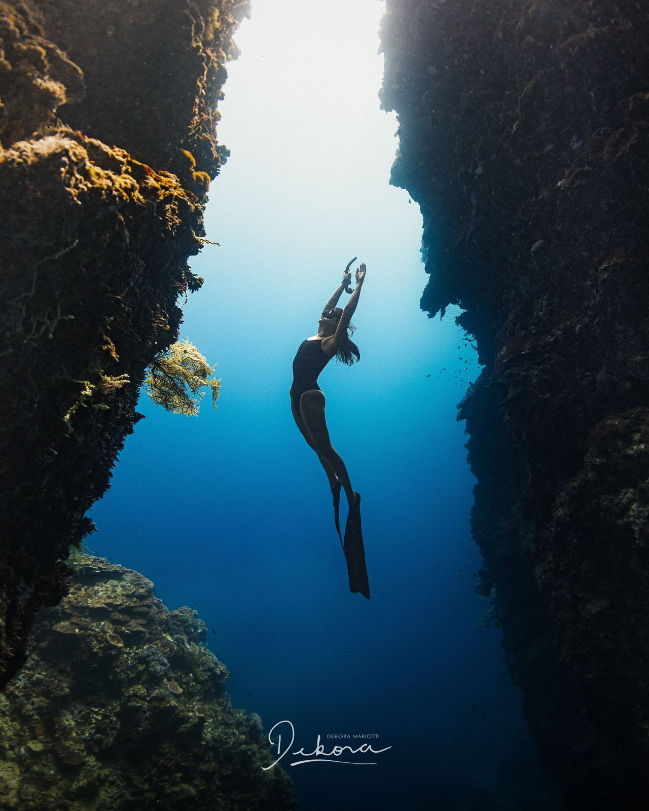
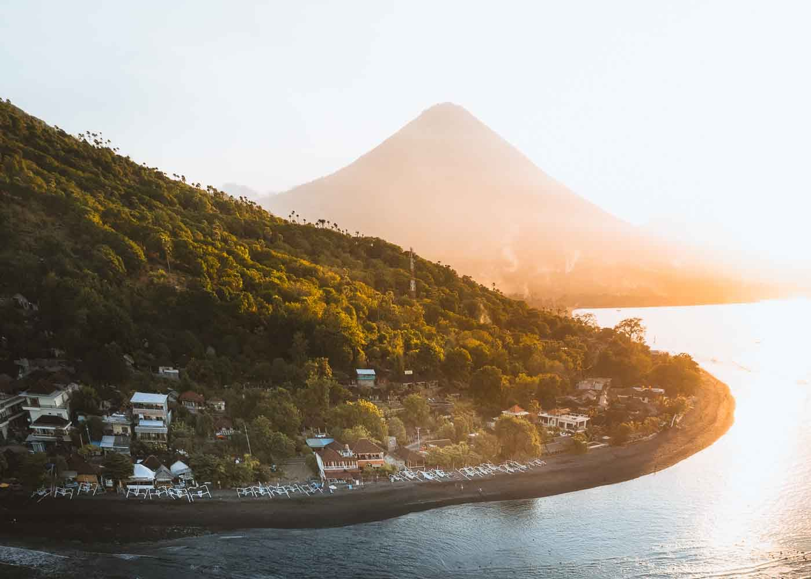
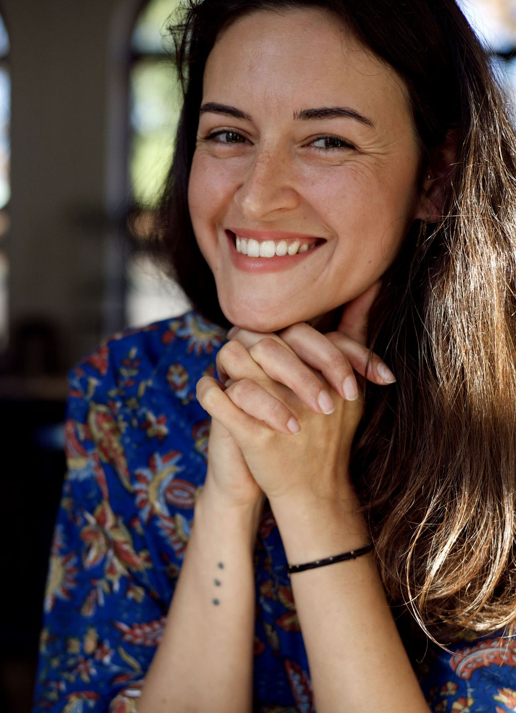
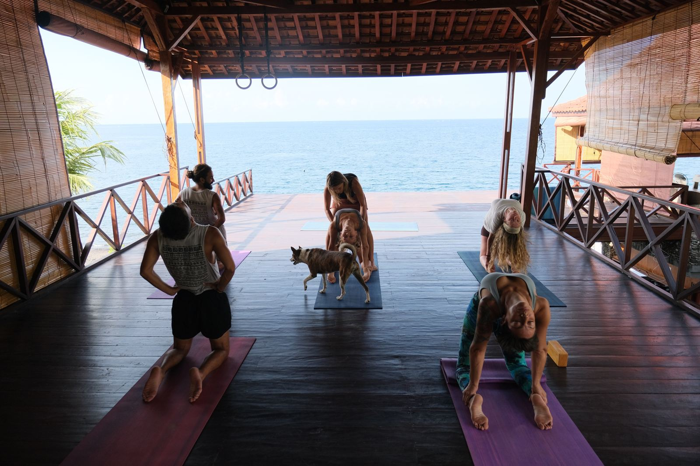
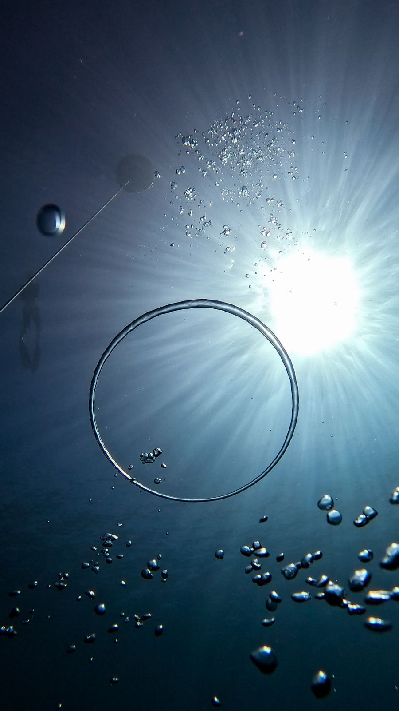
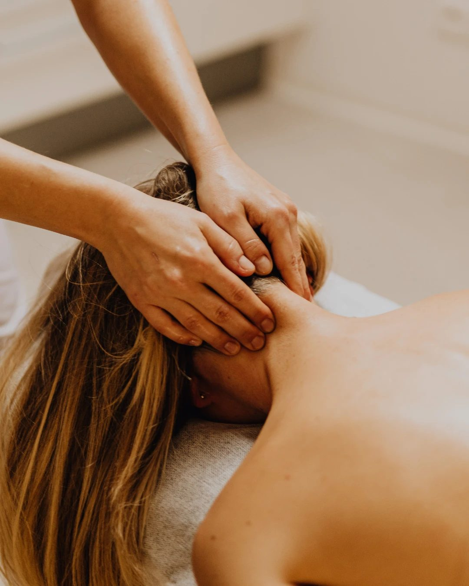
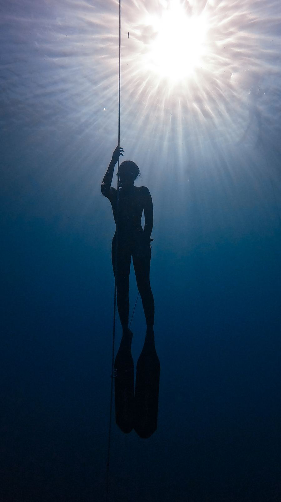

Dech, pohyb, dotek, voda.Cesta zpátky k sobě má víc podob.
Jsem Lenka Rekha, lektorka jógy a jógové terapie, průvodkyně dechem a freediverka. Přes deset let pomáhám lidem naslouchat vlastnímu tělu. Individuálně, ve skupině i pod hladinou.
Co pro tebe mám
Začni tady
Individuální lekce
Jóga, dech a pohyb přesně pro tebe. Osobně i online, s podporou mezi lekcemi.
Rezervovat lekci So 21. 11. · Mariánské LázněWorkshop Flow State Reset
Tři hodiny pohybu a dechu. Odneseš si nástroje, jak se zklidnit a vrátit do flow.
Přihlásit se Nový běh od ledna 2027Kurz Vnitřní ponor
Jóga a dech inspirované freedivingem. 10 lekcí ve studiu a 1 v jámě.
Mám zájem První lekce zdarmaJóga pro firmy
Pravidelné lekce pro týmy v Přerově a Olomouci. Méně bolesti zad a stresu.
Poptat pro firmuRychlá orientace
Co tě dnes přivádí?
Vyber větu, která ti je nejblíž. Ukážu ti, co pro tebe můžu udělat.
- Cítím napětí v těle a potřebuju ho pustit.Chci vědomý dotek, ne jen mechaniku.→ Dotek
- Potřebuju se zklidnit a pořádně nadechnout.Pránájáma a dechové techniky pro klid a soustředění.→ Dech
- Necvičím málo, spíš necvičím správně.Chci detailní vedení, ne pořád to samé.→ Pohyb: integrovaná terapie
- Potřebuju se hýbat s radostí.Bez tlaku na výkon.→ Pohyb: hravá flow
- Táhne mě hloubka.Chci se naučit pracovat s nádechem, který vydrží.→ Voda
- Chci péči jen pro sebe.Individuálně, na míru, s podporou i mezi lekcemi.→ Individuálně
- Hledám to samé pro svůj tým.Jóga a dech přímo na pracovišti.→ Pro firmy

Nádech. Výdech. Přítomný okamžik.

to jsem já, LenkaMoje cesta
Byla jsem političkou, spolumajitelkou kavárny a devět let jsem strávila v korporátu. Pak přišel zlom, který rozum umlčel.
Dnes učím to, co jsem se musela naučit sama: vnímat tělo, dech a to, co je uvnitř skutečné. Londýn, Indie, Filipíny, Bali a zase zpátky v Přerově.

Jóga bez nálepek a mantinelů.
Čtyři cesty k sobě
Jak spolu můžeme pracovat
Dech
Pránájáma, dechové techniky a tříhodinový workshop Flow State Reset.
→
Pohyb
Hravá flow a integrovaná terapie ve skupině, individuální lekce a lekce pro firmy.
→
Dotek
Intuitivní masáž: sportovní masáž, aromaterapie, dech a thajská masáž v jednom.
→
Voda
Vnitřní ponor, retreat na Bali a od léta 2027 kurzy freedivingu.
→
Nádech, který vydrží déle, než si myslíš.
VodaCo říkají ti, kdo se mnou cvičí
Díky Lenčinu individuálnímu přístupu je pro mě nyní jóga radostí, záda mě nebolí a cvičím i sama doma.
Jsem workoholik. Díky józe s Lenkou jsem zpomalila. Učím se mít ráda svoje tělo, trénuji dechové návyky a užívám si jejich vliv na energii i duši. Po hodině cvičení je mi skvěle. Umím pracovně vypnout, zklidnit se a zahnat negativní myšlenky.
Ráda bych touto cestou poděkovala za vynikající masáž. Moje zkušenost byla maximálně pozitivní, a to především díky tomu, že masáž byla zaměřena přesně na problematické partie (záda, lopatky, šíje), které mě dlouhodobě trápí. Oceňuji velmi citlivý, ale přitom účinný přístup. Podařilo se uvolnit i hluboké svalové napětí. Po návštěvě cítím výrazné povolení. Celková péče probíhala v klidném a příjemném duchu. Vřele doporučuji!